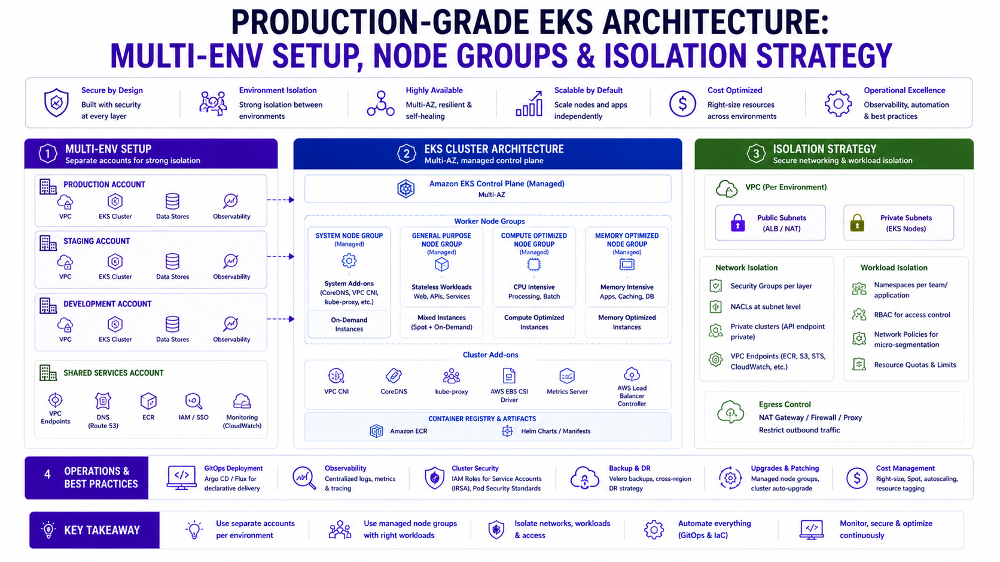

Production-Grade EKS Architecture: Multi-Env Setup, Node Groups & Isolation Strategy
AWS Series | Part 11 — Building secure, cost-optimised, cloud-native infrastructure on AWS.

TL;DR
| Decision | Development | Staging | Production |
|---|---|---|---|
| Cluster strategy | Shared cluster | Shared cluster | Dedicated cluster |
| Node strategy | Karpenter Spot only | Karpenter mixed | MNG bootstrap + Karpenter |
| Namespace isolation | Per-team namespaces | Per-app namespaces | Per-app + network policies |
| Access control | Developer edit access | Read + deploy via ArgoCD | ArgoCD only, no kubectl |
| Resource quotas | Loose | Moderate | Strict |
| Scaling | Manual / low min replicas | HPA enabled | HPA + topology spread |
| Observability | Basic CloudWatch | Full CloudWatch | CloudWatch + Splunk + traces |
| Cost priority | Minimise | Balance | Reliability first |
Introduction
Blog 10 answered the question: ECS or EKS? This post answers the follow-up question every engineer asks after choosing EKS: how do I actually structure this for multiple environments without creating a mess I can't operate?
The wrong answer is to replicate your production cluster setup into dev and staging, spend three times the money, and still end up with environments that drift from each other because "they're just dev." The other wrong answer is to run everything on one cluster with environment labels on namespaces and discover at 2am that a noisy dev workload has starved your production scoring service of CPU.
The right answer sits between those extremes — and it depends on your scale, your team structure, and your compliance requirements. I'll give you the full blueprint: multi-environment cluster strategy, node group design patterns, namespace isolation with network policies, RBAC that dev teams can actually work with, and the Terraform structure that makes all of it repeatable.
Everything in this post is grounded in the Rabobank fraud detection platform and what I'd do differently starting fresh today.
1. Multi-Environment Strategy — Cluster Per Environment or Shared?
This is the first and most consequential decision. Get it wrong and you're either overspending or risking production stability.
Option A — One Cluster, Multiple Namespaces
prod-eks-cluster
├── namespace: fraud-detection-prod
├── namespace: fraud-detection-staging
├── namespace: fraud-detection-dev
└── namespace: kube-systemWhen this works: Small teams (<10 engineers), limited budget, early stage, workloads are not highly regulated.
Why it breaks down: A runaway batch job in dev can consume cluster-level resources. Network policies become complex to maintain. Compliance auditors ask uncomfortable questions about prod/non-prod separation. EKS cluster upgrades affect all environments simultaneously.
Option B — Cluster Per Environment (Recommended for Production Platforms)
dev-eks-cluster (shared dev + staging, Spot-heavy, low cost)
prod-eks-cluster (production only, On-Demand for critical path)When this is right: Regulated environments (DORA, PCI-DSS, SOC 2), multi-team platforms, 10+ services, compliance requirements for production isolation.
Cost reality: Two clusters = two control plane charges ($0.10/hour each = ~$146/month). At enterprise scale, this is negligible compared to the operational safety and compliance benefits.
At Rabobank, production ran on a dedicated cluster. Dev and staging shared a second cluster with namespace isolation between them. This is the pattern I'd recommend starting with for any regulated workload.
Terraform — Multi-Cluster Pattern
# environments/dev/main.tf
module "eks_dev" {
source = "../../modules/eks-cluster"
cluster_name = "dev-eks-cluster"
cluster_version = "1.30"
environment = "dev"
node_strategy = "spot_only"
vpc_id = module.vpc_dev.vpc_id
subnet_ids = module.vpc_dev.private_subnet_ids
endpoint_public_access = true
endpoint_private_access = true
enabled_cluster_log_types = ["api", "audit"]
tags = { Environment = "dev", CostCentre = "platform-dev" }
}
# environments/prod/main.tf
module "eks_prod" {
source = "../../modules/eks-cluster"
cluster_name = "prod-eks-cluster"
cluster_version = "1.30"
environment = "prod"
node_strategy = "mng_plus_karpenter"
vpc_id = module.vpc_prod.vpc_id
subnet_ids = module.vpc_prod.private_subnet_ids
endpoint_public_access = false
endpoint_private_access = true
enabled_cluster_log_types = [
"api", "audit", "authenticator", "controllerManager", "scheduler"
]
tags = { Environment = "prod", CostCentre = "platform-prod" }
}The Reusable EKS Cluster Module
# modules/eks-cluster/main.tf
resource "aws_eks_cluster" "this" {
name = var.cluster_name
role_arn = aws_iam_role.cluster.arn
version = var.cluster_version
vpc_config {
subnet_ids = var.subnet_ids
endpoint_public_access = var.endpoint_public_access
endpoint_private_access = var.endpoint_private_access
security_group_ids = [aws_security_group.cluster.id]
}
encryption_config {
provider { key_arn = aws_kms_key.secrets.arn }
resources = ["secrets"]
}
enabled_cluster_log_types = var.enabled_cluster_log_types
access_config {
authentication_mode = "API_AND_CONFIG_MAP"
bootstrap_cluster_creator_admin_permissions = false
}
tags = merge(var.tags, { Name = var.cluster_name })
depends_on = [
aws_iam_role_policy_attachment.cluster_policy,
aws_cloudwatch_log_group.cluster,
]
}
resource "aws_kms_key" "secrets" {
description = "EKS secrets encryption — ${var.cluster_name}"
deletion_window_in_days = var.environment == "prod" ? 30 : 7
enable_key_rotation = true
tags = var.tags
}
resource "aws_cloudwatch_log_group" "cluster" {
name = "/aws/eks/${var.cluster_name}/cluster"
retention_in_days = var.environment == "prod" ? 90 : 14
tags = var.tags
}2. Node Group Strategy — The Three-Tier Pattern
Every production EKS cluster should have three distinct compute tiers. Running all workloads on a single node group is the most common mistake — and the one that causes the most production incidents.
Tier 1 — System Node Group (Managed, On-Demand, Always-On)
Small, fixed, always-on. Hosts cluster-critical DaemonSets that cannot tolerate Spot interruption: CloudWatch agent, Splunk forwarder, kube-proxy, VPC CNI. These pods must survive an AZ interruption without Kubernetes having to reschedule them from a terminated Spot node.
resource "aws_eks_node_group" "system" {
cluster_name = aws_eks_cluster.this.name
node_group_name = "system"
node_role_arn = aws_iam_role.node.arn
subnet_ids = var.private_subnet_ids
instance_types = ["m5.large"]
scaling_config {
desired_size = 2
min_size = 2
max_size = 4
}
taint {
key = "node-role"
value = "system"
effect = "NO_SCHEDULE"
}
update_config {
max_unavailable = 1
}
labels = {
"node-role" = "system"
"environment" = var.environment
}
tags = merge(var.tags, { Name = "system-node-group" })
}Why the taint matters: Without NO_SCHEDULE on system nodes, Kubernetes will
happily schedule application pods on your system nodes. During a spike, application pods can consume all
CPU/memory and starve the CloudWatch agent — you lose observability exactly when you need it most.
Tier 2 — On-Demand Application Node Pool (Karpenter)
Handles latency-sensitive workloads. On-Demand only — no Spot interruption risk for the critical path.
# karpenter/nodepools/on-demand.yaml
apiVersion: karpenter.sh/v1
kind: NodePool
metadata:
name: on-demand
spec:
template:
metadata:
labels:
node-pool: on-demand
spec:
nodeClassRef:
apiVersion: karpenter.k8s.aws/v1
kind: EC2NodeClass
name: default
requirements:
- key: "karpenter.sh/capacity-type"
operator: In
values: ["on-demand"]
- key: "karpenter.k8s.aws/instance-category"
operator: In
values: ["c", "m"]
- key: "karpenter.k8s.aws/instance-cpu"
operator: In
values: ["4", "8", "16"]
- key: "kubernetes.io/arch"
operator: In
values: ["amd64", "arm64"]
taints:
- key: "workload-type"
value: "latency-sensitive"
effect: NoSchedule
disruption:
consolidationPolicy: WhenEmpty
consolidateAfter: 5m
limits:
cpu: 500
memory: 2000GiTier 3 — Spot Batch Node Pool (Karpenter)
Handles background processors, ML batch jobs, enrichment services. Spot-only, aggressively bin-packed.
# karpenter/nodepools/spot-batch.yaml
apiVersion: karpenter.sh/v1
kind: NodePool
metadata:
name: spot-batch
spec:
template:
metadata:
labels:
node-pool: spot-batch
spec:
nodeClassRef:
apiVersion: karpenter.k8s.aws/v1
kind: EC2NodeClass
name: default
requirements:
- key: "karpenter.sh/capacity-type"
operator: In
values: ["spot"]
- key: "karpenter.k8s.aws/instance-category"
operator: In
values: ["c", "m", "r"]
- key: "karpenter.k8s.aws/instance-cpu"
operator: In
values: ["4", "8", "16", "32"]
disruption:
consolidationPolicy: WhenEmptyOrUnderutilized
consolidateAfter: 30s
limits:
cpu: 1000
memory: 4000GiEC2NodeClass — Shared Configuration
# karpenter/nodeclass.yaml
apiVersion: karpenter.k8s.aws/v1
kind: EC2NodeClass
metadata:
name: default
spec:
amiFamily: AL2023
role: karpenter-node-role
subnetSelectorTerms:
- tags:
karpenter.sh/discovery: prod-eks-cluster
securityGroupSelectorTerms:
- tags:
karpenter.sh/discovery: prod-eks-cluster
blockDeviceMappings:
- deviceName: /dev/xvda
ebs:
volumeSize: 50Gi
volumeType: gp3
encrypted: true
kmsKeyID: arn:aws:kms:eu-west-1:123456789012:key/xxx
userData: |
#!/bin/bash
echo "net.core.somaxconn=65535" >> /etc/sysctl.conf
echo "net.ipv4.tcp_max_syn_backlog=65535" >> /etc/sysctl.conf
sysctl -p
tags:
Environment: production
ManagedBy: karpenterAssigning Pods to the Right Node Pool
# Helm values — scoring service (latency-sensitive path)
tolerations:
- key: "workload-type"
value: "latency-sensitive"
operator: Equal
effect: NoSchedule
nodeSelector:
node-pool: on-demand
---
# Helm values — batch enrichment service (Spot-tolerant)
tolerations: []
nodeSelector:
node-pool: spot-batch3. Namespace Isolation — The Multi-Team Model
Namespaces are the primary isolation unit in Kubernetes. Getting the namespace structure right early prevents months of painful refactoring.
Namespace Design — By Domain, Not By Team
prod-eks-cluster
├── kube-system # Kubernetes system components — hands off
├── kube-public # Public cluster info — hands off
├── argocd # GitOps control plane — platform team only
├── monitoring # Prometheus, Grafana, OTEL collector
├── fraud-detection # Fraud scoring microservices
├── payments # Payment processing services
├── identity # Keycloak, auth services
├── data-pipeline # Kafka consumers, enrichment workers
└── shared-services # Shared tooling accessible by all teamsWhy by domain, not by team: Teams change. Services get reassigned. If namespaces are named
after teams, you end up with team-alpha owning services in team-beta's namespace
after a reorg. Domain-based namespaces outlast team structures.
Terraform — Namespace + ResourceQuota + LimitRange
# modules/eks-namespace/main.tf
resource "kubernetes_namespace" "this" {
metadata {
name = var.namespace_name
labels = {
"app.kubernetes.io/managed-by" = "terraform"
"environment" = var.environment
"domain" = var.domain
}
annotations = {
"team" = var.owning_team
"cost-centre" = var.cost_centre
}
}
}
resource "kubernetes_resource_quota" "this" {
metadata {
name = "${var.namespace_name}-quota"
namespace = kubernetes_namespace.this.metadata[0].name
}
spec {
hard = {
"requests.cpu" = var.cpu_request_limit
"requests.memory" = var.memory_request_limit
"limits.cpu" = var.cpu_limit
"limits.memory" = var.memory_limit
"pods" = var.max_pods
"persistentvolumeclaims" = var.max_pvcs
}
}
}
resource "kubernetes_limit_range" "this" {
metadata {
name = "${var.namespace_name}-limits"
namespace = kubernetes_namespace.this.metadata[0].name
}
spec {
limit {
type = "Container"
default = { "cpu" = "500m", "memory" = "512Mi" }
default_request = { "cpu" = "100m", "memory" = "128Mi" }
max = { "cpu" = "4", "memory" = "8Gi" }
}
limit {
type = "Pod"
max = { "cpu" = "8", "memory" = "16Gi" }
}
}
}
module "fraud_detection_namespace" {
source = "./modules/eks-namespace"
namespace_name = "fraud-detection"
environment = "prod"
domain = "fraud"
owning_team = "fraud-platform"
cost_centre = "RISK-001"
cpu_request_limit = "16"
memory_request_limit = "32Gi"
cpu_limit = "32"
memory_limit = "64Gi"
max_pods = "100"
max_pvcs = "5"
}Network Policies — Namespace-Level Traffic Control
By default, all pods in a Kubernetes cluster can talk to all other pods — across namespaces. This is a significant security gap in a multi-team platform. Network Policies enforce which namespaces and pods can communicate.
# Default deny — apply to every namespace as the baseline
apiVersion: networking.k8s.io/v1
kind: NetworkPolicy
metadata:
name: default-deny-all
namespace: fraud-detection
spec:
podSelector: {}
policyTypes:
- Ingress
- Egress
---
# Allow ingress from the identity namespace (Keycloak auth)
apiVersion: networking.k8s.io/v1
kind: NetworkPolicy
metadata:
name: allow-from-identity
namespace: fraud-detection
spec:
podSelector: {}
policyTypes:
- Ingress
ingress:
- from:
- namespaceSelector:
matchLabels:
kubernetes.io/metadata.name: identity
---
# Allow egress to data-pipeline namespace (Kafka)
apiVersion: networking.k8s.io/v1
kind: NetworkPolicy
metadata:
name: allow-to-data-pipeline
namespace: fraud-detection
spec:
podSelector: {}
policyTypes:
- Egress
egress:
- to:
- namespaceSelector:
matchLabels:
kubernetes.io/metadata.name: data-pipeline
ports:
- protocol: TCP
port: 9092
---
# Allow DNS — ALWAYS include this with default-deny or name resolution breaks
apiVersion: networking.k8s.io/v1
kind: NetworkPolicy
metadata:
name: allow-dns
namespace: fraud-detection
spec:
podSelector: {}
policyTypes:
- Egress
egress:
- to:
- namespaceSelector:
matchLabels:
kubernetes.io/metadata.name: kube-system
ports:
- protocol: UDP
port: 53
- protocol: TCP
port: 53
---
# Allow egress to AWS services via VPC endpoints
apiVersion: networking.k8s.io/v1
kind: NetworkPolicy
metadata:
name: allow-aws-endpoints
namespace: fraud-detection
spec:
podSelector: {}
policyTypes:
- Egress
egress:
- to:
- ipBlock:
cidr: 10.0.0.0/8
ports:
- protocol: TCP
port: 443Critical: Always add the DNS allow rule when using default-deny. Forgetting it silently breaks all service discovery — pods can't resolve each other's names, and the error looks like a service failure, not a DNS failure. This is the most common Network Policy mistake.
4. RBAC — Least Privilege for Multi-Team Access
The Access Model
Platform Team: cluster-admin on all namespaces (via EKS Access Entry)
Domain Teams: edit on their namespace(s) only
CI/CD (ArgoCD): specific permissions per namespace via ArgoCD RBAC
Read-Only: view on all namespaces (architects, SREs, auditors)
No Direct Prod: nobody runs kubectl apply in production — ArgoCD onlyTerraform — EKS Access Entries
# Platform team — full cluster access
resource "aws_eks_access_entry" "platform_team" {
cluster_name = aws_eks_cluster.this.name
principal_arn = aws_iam_role.platform_engineer.arn
type = "STANDARD"
}
resource "aws_eks_access_policy_association" "platform_admin" {
cluster_name = aws_eks_cluster.this.name
principal_arn = aws_iam_role.platform_engineer.arn
policy_arn = "arn:aws:eks::aws:cluster-access-policy/AmazonEKSClusterAdminPolicy"
access_scope { type = "cluster" }
}
# Fraud detection team — edit access to their namespace only
resource "aws_eks_access_entry" "fraud_team" {
cluster_name = aws_eks_cluster.this.name
principal_arn = aws_iam_role.fraud_team.arn
type = "STANDARD"
}
resource "aws_eks_access_policy_association" "fraud_team_edit" {
cluster_name = aws_eks_cluster.this.name
principal_arn = aws_iam_role.fraud_team.arn
policy_arn = "arn:aws:eks::aws:cluster-access-policy/AmazonEKSEditPolicy"
access_scope {
type = "namespace"
namespaces = ["fraud-detection"]
}
}
# Read-only access — architects, auditors
resource "aws_eks_access_entry" "read_only" {
cluster_name = aws_eks_cluster.this.name
principal_arn = aws_iam_role.read_only.arn
type = "STANDARD"
}
resource "aws_eks_access_policy_association" "read_only_view" {
cluster_name = aws_eks_cluster.this.name
principal_arn = aws_iam_role.read_only.arn
policy_arn = "arn:aws:eks::aws:cluster-access-policy/AmazonEKSViewPolicy"
access_scope { type = "cluster" }
}Custom RBAC — Fine-Grained Namespace Permissions
The AWS managed AmazonEKSEditPolicy is broad. For regulated environments, create a custom Role
that gives developers exactly what they need — no more:
# Read + debug only — no direct deployments in prod
apiVersion: rbac.authorization.k8s.io/v1
kind: Role
metadata:
name: developer-prod-readonly
namespace: fraud-detection
rules:
- apiGroups: [""]
resources: ["pods", "pods/log", "services", "endpoints", "configmaps"]
verbs: ["get", "list", "watch"]
- apiGroups: [""]
resources: ["pods/exec"]
verbs: ["create"]
- apiGroups: ["apps"]
resources: ["deployments", "replicasets", "statefulsets"]
verbs: ["get", "list", "watch"]
- apiGroups: ["autoscaling"]
resources: ["horizontalpodautoscalers"]
verbs: ["get", "list", "watch"]
# CANNOT: create, update, delete, patch — no direct deploys in prod
---
apiVersion: rbac.authorization.k8s.io/v1
kind: RoleBinding
metadata:
name: fraud-team-prod-readonly
namespace: fraud-detection
subjects:
- kind: Group
name: fraud-platform-engineers
apiGroup: rbac.authorization.k8s.io
roleRef:
kind: Role
name: developer-prod-readonly
apiGroup: rbac.authorization.k8s.io5. Multi-Environment Helm Values Strategy
This is the section that prevents the most operational pain. How you structure Helm values across environments determines your deployment toil for the life of the platform.
The Three-Layer Hierarchy
charts/
└── fraud-detection-service/
├── Chart.yaml
├── values.yaml # Base — defaults for ALL environments
├── values-dev.yaml # Dev overrides
├── values-staging.yaml # Staging overrides
└── values-prod.yaml # Production overrides# values.yaml — base defaults
replicaCount: 1
image:
repository: 123456789012.dkr.ecr.eu-west-1.amazonaws.com/fraud-detection-service
pullPolicy: IfNotPresent
tag: ""
service:
type: ClusterIP
port: 8080
resources:
requests:
cpu: "200m"
memory: "256Mi"
limits:
cpu: "1000m"
memory: "1Gi"
autoscaling:
enabled: false
minReplicas: 1
maxReplicas: 5
targetCPUUtilizationPercentage: 70
topologySpreadConstraints:
- maxSkew: 1
topologyKey: topology.kubernetes.io/zone
whenUnsatisfiable: ScheduleAnyway
livenessProbe:
httpGet:
path: /health
port: 8080
initialDelaySeconds: 30
periodSeconds: 10
readinessProbe:
httpGet:
path: /ready
port: 8080
initialDelaySeconds: 15
periodSeconds: 5# values-dev.yaml — development overrides
replicaCount: 1
resources:
requests:
cpu: "100m"
memory: "128Mi"
limits:
cpu: "500m"
memory: "512Mi"
autoscaling:
enabled: false
topologySpreadConstraints:
- maxSkew: 1
topologyKey: topology.kubernetes.io/zone
whenUnsatisfiable: ScheduleAnyway# values-prod.yaml — production overrides
replicaCount: 2
resources:
requests:
cpu: "500m"
memory: "512Mi"
limits:
cpu: "2000m"
memory: "2Gi"
autoscaling:
enabled: true
minReplicas: 2
maxReplicas: 20
targetCPUUtilizationPercentage: 65
topologySpreadConstraints:
- maxSkew: 1
topologyKey: topology.kubernetes.io/zone
whenUnsatisfiable: DoNotSchedule # Hard constraint — never allow AZ imbalance
tolerations:
- key: "workload-type"
value: "latency-sensitive"
operator: Equal
effect: NoSchedule
nodeSelector:
node-pool: on-demandArgoCD ApplicationSet — Deploy to All Environments from One Definition
# applicationset.yaml — one definition, three environments
apiVersion: argoproj.io/v1alpha1
kind: ApplicationSet
metadata:
name: fraud-detection-service
namespace: argocd
spec:
generators:
- list:
elements:
- env: dev
cluster: dev-eks-cluster
namespace: fraud-detection
valuesFile: values-dev.yaml
autoSync: "true"
- env: staging
cluster: dev-eks-cluster
namespace: fraud-detection-staging
valuesFile: values-staging.yaml
autoSync: "true"
- env: prod
cluster: prod-eks-cluster
namespace: fraud-detection
valuesFile: values-prod.yaml
autoSync: "false" # Manual sync in prod — always review the diff first
template:
metadata:
name: "fraud-detection-service-{{env}}"
namespace: argocd
spec:
project: fraud-detection
source:
repoURL: https://github.com/org/fraud-detection-infra
targetRevision: main
path: charts/fraud-detection-service
helm:
valueFiles:
- values.yaml # Base always loaded first
- "{{valuesFile}}" # Environment-specific override on top
destination:
server: "https://{{cluster}}.example.com"
namespace: "{{namespace}}"
syncPolicy:
automated:
prune: "{{autoSync}}"
selfHeal: "{{autoSync}}"
syncOptions:
- CreateNamespace=true
- ServerSideApply=trueProduction lesson:autoSync: falseon production is not bureaucracy — it's the safety gate that prevents a badvalues-prod.yamlchange from immediately rolling out to all 33 services without a human checking the ArgoCD diff first. In staging you want fast feedback. In production you want deliberate control.
6. Cluster Upgrade Strategy — Zero-Downtime EKS Version Bumps
EKS cluster upgrades are not optional — AWS ends support for old versions and stops providing security patches. A cluster upgrade with 33 microservices running is a non-trivial operation. Here is the safe pattern.
Upgrade Sequence
- Check add-on compatibility — every EKS managed add-on has a supported version range per
Kubernetes version.
aws eks describe-addon-versions --kubernetes-version 1.31 - Update control plane first — control plane and nodes can be one minor version apart.
aws eks update-cluster-version --name prod-eks-cluster --kubernetes-version 1.31 - Update managed add-ons — CoreDNS, kube-proxy, VPC CNI — update each to versions compatible with 1.31.
- Update Managed Node Group (system tier) — rolling update, one node at a time: cordon +
drain + replace.
aws eks update-nodegroup-version --cluster-name prod-eks-cluster --nodegroup-name system - Update Karpenter node pools — update
amiFamilyin EC2NodeClass. Force refresh:
kubectl annotate nodepool on-demand karpenter.sh/do-disrupt=true - Validate — check all pods running, verify add-on versions, run smoke tests via ArgoCD sync.
Terraform — Controlled Version Bumps
variable "cluster_version" {
description = "EKS Kubernetes version — change here to trigger upgrade"
type = string
default = "1.30"
}
resource "aws_eks_cluster" "this" {
version = var.cluster_version
# ...
}
locals {
eks_addon_versions = {
"1.30" = {
vpc-cni = "v1.18.1-eksbuild.1"
coredns = "v1.11.1-eksbuild.4"
kube-proxy = "v1.30.0-eksbuild.3"
}
"1.31" = {
vpc-cni = "v1.19.0-eksbuild.1"
coredns = "v1.11.3-eksbuild.1"
kube-proxy = "v1.31.0-eksbuild.2"
}
}
}
resource "aws_eks_addon" "vpc_cni" {
cluster_name = aws_eks_cluster.this.name
addon_name = "vpc-cni"
addon_version = local.eks_addon_versions[var.cluster_version]["vpc-cni"]
resolve_conflicts_on_update = "PRESERVE"
}7. Cost Optimisation — Environment-Level Controls
Dev Cluster — Scale to Zero Overnight
resource "aws_scheduler_schedule" "dev_scale_down" {
name = "dev-cluster-scale-down"
flexible_time_window { mode = "OFF" }
schedule_expression = "cron(0 20 ? * MON-FRI *)"
target {
arn = aws_lambda_function.cluster_scaler.arn
role_arn = aws_iam_role.scheduler.arn
input = jsonencode({
cluster = "dev-eks-cluster"
action = "scale_down"
namespaces = ["fraud-detection", "payments", "identity"]
})
}
}
resource "aws_scheduler_schedule" "dev_scale_up" {
name = "dev-cluster-scale-up"
flexible_time_window { mode = "OFF" }
schedule_expression = "cron(0 7 ? * MON-FRI *)"
target {
arn = aws_lambda_function.cluster_scaler.arn
role_arn = aws_iam_role.scheduler.arn
input = jsonencode({
cluster = "dev-eks-cluster"
action = "scale_up"
namespaces = ["fraud-detection", "payments", "identity"]
})
}
}Kubecost — Per-Namespace Cost Visibility
resource "helm_release" "kubecost" {
name = "kubecost"
repository = "https://kubecost.github.io/cost-analyzer/"
chart = "cost-analyzer"
version = "2.3.0"
namespace = "kubecost"
create_namespace = true
set {
name = "kubecostToken"
value = var.kubecost_token
}
set {
name = "global.prometheus.enabled"
value = "true"
}
}Cost Summary — Multi-Environment
Dev Cluster (Spot-heavy, scaled down overnight)
Control plane: $73/month
Karpenter Spot nodes: ~$80/month (avg 2-3 nodes, business hours)
─────────────────────────────────────────
Total dev: ~$153/month
Prod Cluster (MNG system + Karpenter)
Control plane: $73/month
System MNG (2×m5.large): $67/month
Karpenter on-demand: ~$200/month (fraud scoring)
Karpenter Spot: ~$40/month (batch)
─────────────────────────────────────────
Total prod: ~$380/month
Both clusters: ~$533/month8. Common Mistakes & Anti-Patterns
Mistake 1: One Giant Node Group for Everything
The most common starting mistake. General workloads compete with latency-sensitive services. A memory-hungry batch job starves the fraud scoring pod. Use at least two Karpenter NodePools: one for latency-sensitive On-Demand, one for batch Spot.
Mistake 2: No ResourceQuotas on Namespaces
Without quotas, one team's misconfigured deployment can consume all cluster CPU and starve every other namespace. This is a multi-tenancy fundamental. Always apply ResourceQuotas and LimitRanges before any team deploys to a shared cluster.
Mistake 3: Network Policies Without the DNS Rule
Applying a default-deny NetworkPolicy and forgetting to allow UDP/TCP port 53 to kube-system breaks all service discovery silently. Every service-to-service call fails with a timeout, not a DNS error — it's extremely confusing to debug. Always add the DNS allow rule as part of the default-deny template.
Mistake 4: Skipping the System Node Group
Running DaemonSets (CloudWatch, Splunk, VPC CNI) on Spot nodes means a Spot interruption can temporarily orphan your observability. Add a small, always-on system Managed Node Group. The cost (~$67/month for 2×m5.large) is trivial compared to operating blind during an incident.
Mistake 5: Auto-Syncing ArgoCD to Production
autoSync: true on production means a bad values file merge goes live immediately. Always set
autoSync: false in production — every production sync should be a deliberate human action with
a diff review in the ArgoCD UI.
Mistake 6: No Upgrade Strategy Until It's Forced
AWS will end-of-life your EKS version and stop providing patches. When that happens under pressure it's a crisis. Run a planned cluster upgrade at least once per year, follow the add-on compatibility matrix, and validate in dev before touching staging or prod.
Mistake 7: Sharing a Cluster Between Prod and Non-Prod
A noisy dev deployment consuming Karpenter's node limit can prevent production pods from scaling. A misconfigured Network Policy in staging can accidentally reach production services. If you're in a regulated environment, keep prod on a dedicated cluster.
Architecture Decision Matrix
| Decision | Single Cluster + Namespaces | Cluster Per Environment |
|---|---|---|
| Cost | ✅ One control plane | ❌ Two control planes (~$146/month) |
| Blast radius | ❌ Dev affects prod | ✅ Fully isolated |
| Compliance (DORA, PCI) | ❌ Hard to satisfy | ✅ Clean separation |
| Upgrade risk | ❌ All envs affected simultaneously | ✅ Upgrade dev first, validate, then prod |
| Operational complexity | ✅ Simpler | ⚠️ Two clusters to manage |
| Network policy complexity | ❌ Cross-namespace rules get complex | ✅ Simpler per-cluster |
| Best for | Small teams, early stage | Regulated, multi-team, production platforms |
The Golden Rule
"Start with the simplest structure that satisfies your compliance requirements — not the most impressive one. For most regulated platforms, that means a dedicated production cluster with three compute tiers (system MNG + on-demand Karpenter + Spot Karpenter), namespace isolation with ResourceQuotas and NetworkPolicies, ArgoCD with manual sync in production and auto-sync in dev, and Helm values organised as base/environment/service-override. Build the dev cluster cheap. Build the prod cluster right. And never share a cluster between production and non-production if you're operating under DORA, PCI-DSS, or SOC 2."